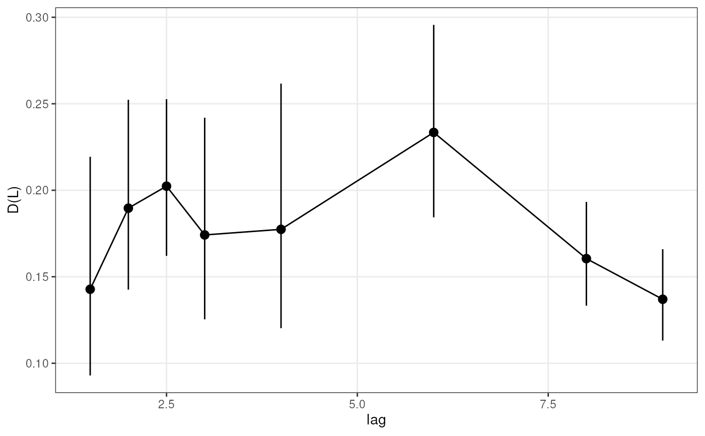
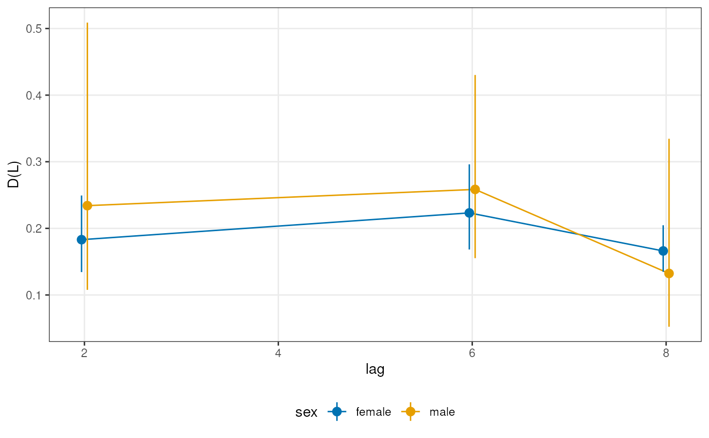
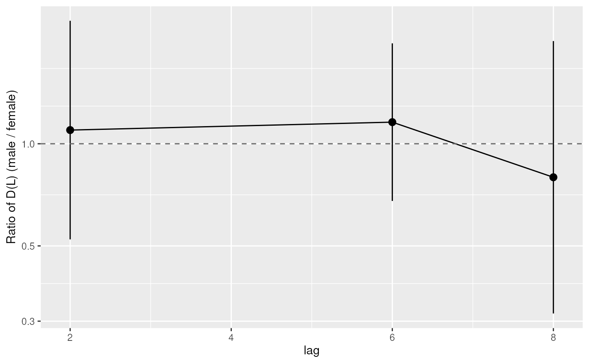
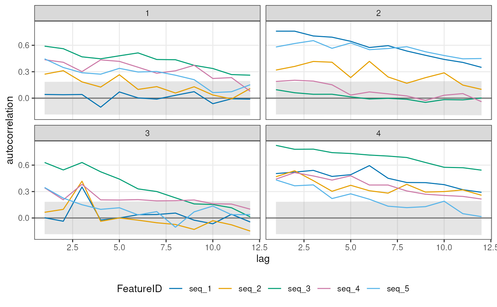

Plot a lag profile: a variogram or autocorrelations
Source:R/AllGenerics.R, R/plotLagProfile.R, R/zzz-mae.R
plotLagProfile.RdplotLagProfile() draws a statistic against time lag: the
variogram \(D(L)\), how far samples of the same subject are apart at
each lag, with its confidence interval, as stored by
miaTime::addVariogram(); or the autocorrelation of each feature
in each subject.
Usage
plotLagProfile(x, ...)
# S4 method for class 'SummarizedExperiment'
plotLagProfile(x, name = "variogram", ...)
# S4 method for class 'data.frame'
plotLagProfile(
x,
type = c("dissimilarity", "ratio"),
feature.col = "FeatureID",
group = NULL,
colour.by = NULL,
facet.by = group,
...
)
# S4 method for class 'MultiAssayExperiment'
plotLagProfile(x, ..., experiment = 1L)Arguments
- x
a
data.framewith a variogram or an autocorrelation table, or aSummarizedExperimentobject with such a table in itsmetadata.- ...
additional arguments passed to
geom_pointrangefor variograms andgeom_linefor autocorrelations.- name
Character scalar. Specifies the entry ofmetadata(x)holding the table. (Default:"variogram")- type
Character scalar. For variograms, draws the dissimilarity at each lag ("dissimilarity") or, for a variogram computed withsplit.by, the ratio between its levels ("ratio"), on a log scale with a line at 1. (Default:"dissimilarity")- feature.col
Character scalar. For autocorrelations, specifies the column of feature names;NULLfor a table of one series. (Default:"FeatureID")- group
Character scalar. For autocorrelations, specifies the column that identifies subjects. (Default:NULL)- colour.by
Character scalar. For autocorrelations, specifies the column that colours the lines, such asfeature.col. IfNULL, all lines take one colour. (Default:NULL)- facet.by
Character scalar. Specifies the column that splits the table into panels. (Default:group)- experiment
Character scalarorinteger scalar. For aMultiAssayExperiment, the experiment to plot; its samples get thecolDataofx. (Default:1L)
Details
The variogram is a table with the columns lag, estimate,
lower and upper, and optionally type and, between
lag and type, the split.by column. With
split.by, each level or comparison is drawn in its own colour,
slightly shifted apart at each lag.
An autocorrelation table has the columns lag and acf,
one row per feature, subject and lag, as in Gibbons et al. (2017,
doi:10.1371/journal.pcbi.1005364, Fig. 5). Each feature in each subject
is a line, by default in one panel per subject. A column
time.lag (the lag in time units) replaces lag on the x
axis. With a column n.pairs, the pairs of samples at each lag,
a band shows \(\pm 1.96 / \sqrt{n}\), the range of
autocorrelations expected without dependence between samples.
Lags without an estimate are dropped.
Examples
data("hitchip1006", package = "miaTime")
tse <- mia::transformAssay(hitchip1006, method = "hellinger")
# Squared Hellinger distance between samples of a subject L time units
# apart
tse <- miaTime::addVariogram(tse, time.col = "time", group = "subject",
assay.type = "hellinger", method = "euclidean", squared = TRUE,
time.lag = c(1.5, 2, 2.5, 3, 4, 6, 8, 9))
plotLagProfile(tse)

# The same for women and men
tse <- miaTime::addVariogram(tse, time.col = "time", group = "subject",
assay.type = "hellinger", method = "euclidean", squared = TRUE,
time.lag = c(2, 6, 8), split.by = "sex", name = "variogram_sex")
#> 37 samples with missing values in 'time', 'subject' or 'sex' were removed.
plotLagProfile(tse, name = "variogram_sex")

# Their ratio
plotLagProfile(tse, name = "variogram_sex", type = "ratio")

# Hourly samples with reads of four vessels of an artificial gut, hours
# 476 to 592, one sample per hour, and the five most abundant taxa
data("SilvermanAGutData", package = "miaTime")
tse <- SilvermanAGutData
tse <- tse[, tse$SampleType == "Hourly" &
tse$Normal_Noise_Sample == "Normal" & tse$Time.hr %in% 476:592 &
colSums(SummarizedExperiment::assay(tse)) > 0]
tse <- tse[, !duplicated(paste(tse$Vessel, tse$Time.hr))]
tse <- mia::transformAssay(tse, method = "relabundance")
tse <- tse[mia::getTop(tse, top = 5), ]
# Illustrative autocorrelation table in the form of miaTime's
# getAutocorrelation(), from stats::acf() on the hourly grid; hours
# without a sample are NA
acfs <- do.call(rbind, lapply(unique(tse$Vessel), function(v) {
j <- match(476:592, tse$Time.hr[tse$Vessel == v])
m <- SummarizedExperiment::assay(tse, "relabundance")[,
tse$Vessel == v][, j]
present <- !is.na(j)
do.call(rbind, lapply(rownames(m), function(feature) {
r <- stats::acf(m[feature, ], lag.max = 12,
na.action = stats::na.pass, plot = FALSE)
data.frame(FeatureID = feature, Vessel = v, lag = 1:12,
acf = r$acf[-1L], n.pairs = vapply(1:12, function(l)
sum(present[-seq_len(l)] & head(present, -l)),
integer(1)))
}))
}))
plotLagProfile(acfs, group = "Vessel", colour.by = "FeatureID")
